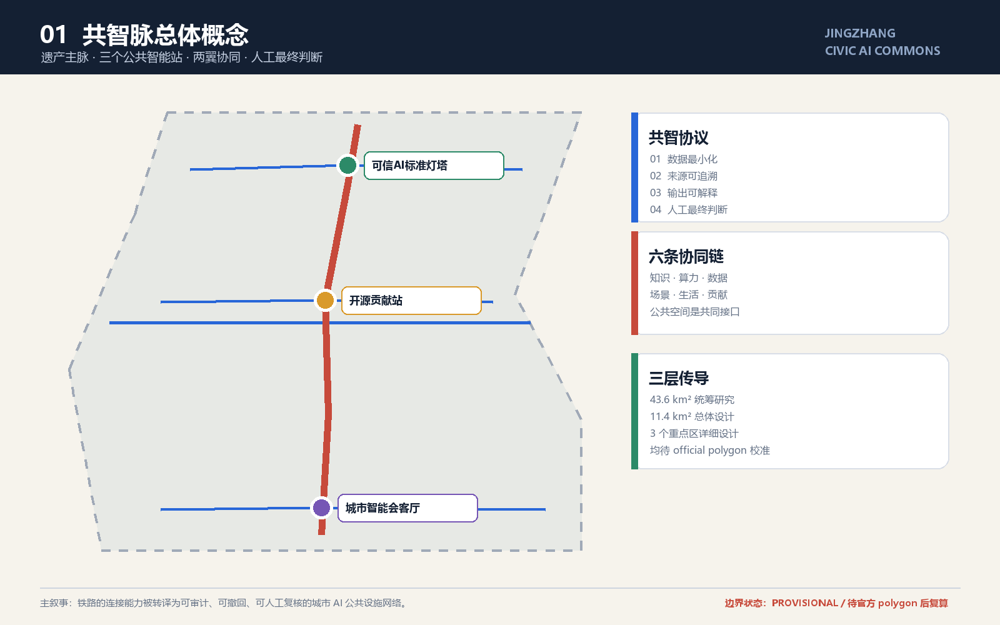
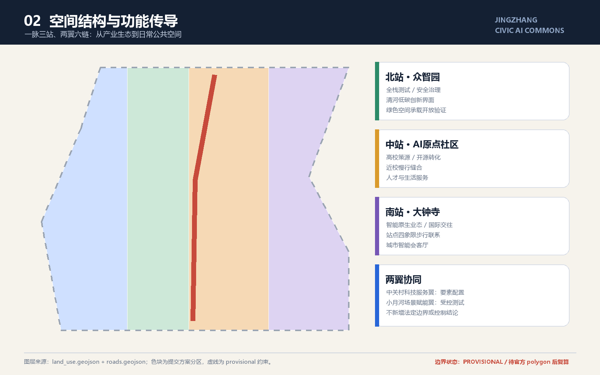
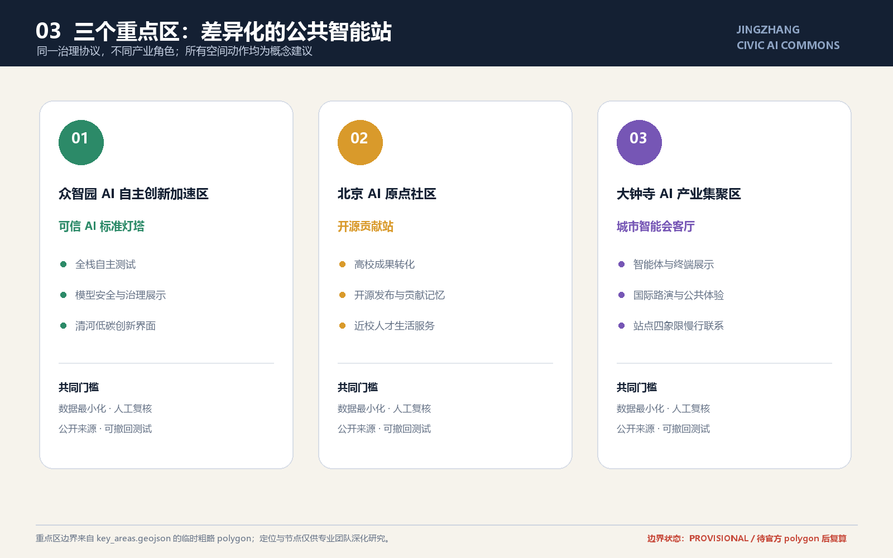
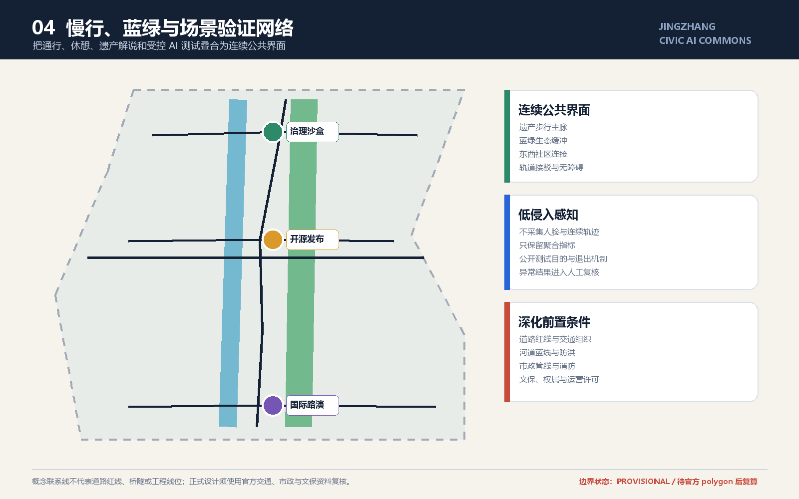
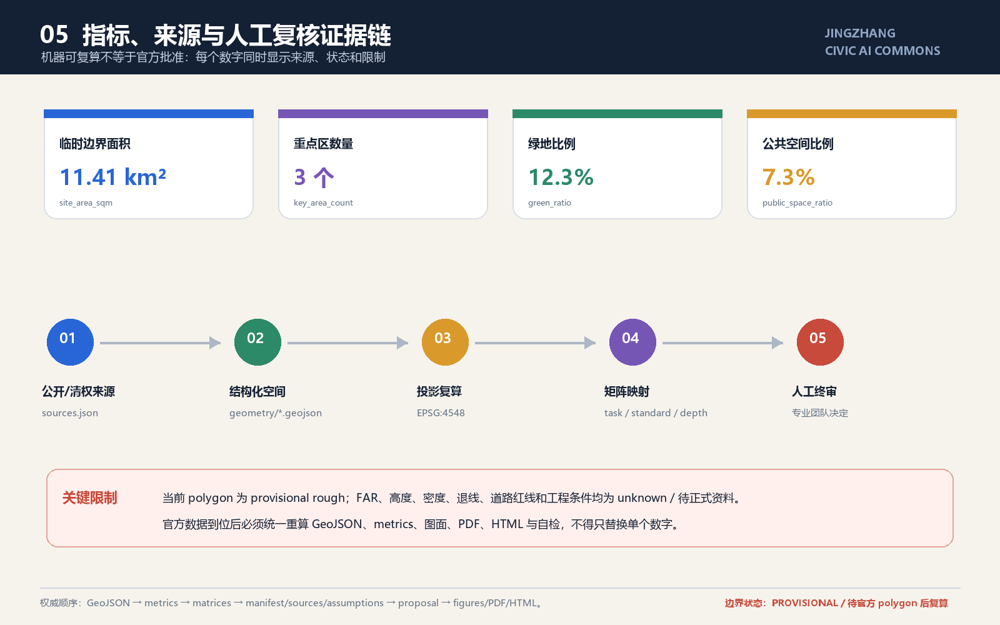

用地分区、总览地图与三层范围


所有空间联系、重点节点和分期均为概念建议、参考方案或可供专业团队深化研究；不构成控规、道路红线、工程线位或政府实施承诺。
核心指标
临时边界面积11.41 km²provisional rough / 待复算
绿地比例12.3%由 green_space.geojson 复算
公共空间比例7.3%由 public_space.geojson 复算
重点区域

众智园
可信 AI 标准灯塔：安全评测、全栈测试、清河低碳创新界面。
AI 原点社区
开源贡献站：高校策源、成果转化、人才与生活服务。
大钟寺
城市智能会客厅：智能原生业态、国际路演、轨道接驳。
交通慢行与蓝绿公共空间

建筑与更新项目
低扰动更新
优先使用可拆卸公共组件、首层共享界面和运营试点；具体拆改留、规模、高度和权属待官方资料与专业复核。
三阶段参考路径
近期：公开议题与轻量原型；中期：专业深化与受控试点；长期：官方数据校准后的空间更新和持续治理。
AI 场景与任务覆盖
10 类场景
开源发布、治理沙盒、端侧算力、慢行导航、国际路演、低碳廊道、成果转化、数据要素、生活服务、全球活动周。
三类产业验证
治理沙盒、端侧算力驿站、数据要素会客厅仅在独立环境测试，公开目的、退出机制和人工责任人。
agent.1 总体概念agent.2 创新生态agent.3 AI+场景agent.4 公共空间agent.5 文化叙事agent.6 长期运营
指标证据与自检状态

确定性校验
提交前运行 validate / spatial / visual / professional evidence 全链检查。
人工复核
AI 输出只辅助识别问题；规划、公共安全、隐私和实施判断由人类负责。
可撤回
测试场景必须公开状态，可暂停、纠错、删除非必要数据。
来源
| 等级 | 用途 | 禁止用途 |
|---|---|---|
| official / cleared | 任务、范围文字、专业原则、智能体任务 | 不能替代缺失的项目官方 polygon 与控规条件 |
| background only | 全球创新生态机制比较 | 不能支撑本项目法定空间结论 |
| provisional only | 临时生成、可视化与 intake 自检 | 官方红线、精确面积、审批或实施依据 |
假设与待补资料
待补：官方 SITE_BOUNDARY、三处 KEY_AREA polygon、控规条件、道路红线、现状建筑/权属、市政消防、文保与蓝绿控制资料。官方数据到位后必须统一重算几何、指标、图、PDF、HTML 与自检。